Principales características
En esta sección se pretende detallar con un poco más de profusión las distintas características y módulos disponibles de TAU, acompañado de capturas de pantalla para poderse hacer una idea. Previamente hay que destacar que TAU es una aplicación "extensible", en el aspecto de que permite añadirle funcionalidad mediante "nuevos módulos". Es decir, TAU ofrece un framework básico, que es usado por el resto de módulos para la interacción entre ellos. Podéis encontrar más detalles en el documento de Arquitectura de TAU en la carpeta DocumentaciónEn resumidas cuentas, esta es la funcionalidad que YA ofrece TAU:
- En idioma Español
- Gestión de inventario del parque informático (ordenadores, impresoras, jetdirects, switches, etc)
- Gestión de usuarios (que equipo utilizan, ubicación física, que aplicaciones disponen,etc)
- Gestión de aplicaciones (inventario de aplicaciones software, autorizaciones de acceso, fichas técnicas, etc.)
- Gestión de extensiones telefónicas, grupos de captura, y rosetas
- Gestión de averías (de hardware, seguimiento, resolución, coste)
- Gestión de contactos (para contacto con proveedores, empresas colaboradoras,etc.)
- Gestión de Biblioteca de medios (CDs, DVDs)
- Servicio de Mensajería (entre usuarios de TAU para dejar recados, llamadas perdidas, visitas, etc.)
- Gestión de almacén y control de fungibles (estado de almacén, pedidos, estadísticas de gasto)
- Integración con Directorio Activo (alta de usuarios automática, administración del Directorio Activo vía web)
- Control Remoto (mediante UltraVNC para asistencia al usuario)
- Gestor de incidencias (Zentrack)
- Conexión Terminal Server (mediante applet java para administrar servidores)
- Obtención de datos en tiempo real (mediante interfaz WMI)
- Notificaciones (para enviar mensajes a grupos de usuario por email, logonscript, net send, página web)
- Notas, Calendario, Utilidades, Alertas, Correo electrónico, etc.
- Estadísticas de Sincronización Remota
- Vistas en paneles
- Autenticación SSO con Dominio Windows, autenticación LDAP, etc.
- Activación de módulos al gusto
- TAU phone
En español
Este software está realizado integramente en Español. No tiene más causa de que es nuestro lenguaje natural, y en ningún momento se ha pensado en "traducirlo" a otros idiomas. El que se queje ; ), ya sabe, al ser software GPL bienvenida es su colaboración.Gestión de inventario
Este módulo es quizás el módulo principal de TAU. Su objetivo es gestionar el parque informático del Departamento. Es decir, registrar todos los datos sobre ordenadores, pantallas, impresoras, switches, direcciones ip, empresas, suministradores, garantías, ubicaciones físicas de los elementos, etc). Se trata de saber qué recursos dispone el departamento, quien los tiene asignado, y administrar todo el ciclo de vida de éstos a lo largo de su uso. Describir este módulo necesitaría de un apartado para el sólo, ya que es bastante extenso.La interfaz está basada en AJAX, y su principal virtud es que permite "navegar" entre las relaciones de los elementos (equipo, usuario, ubicación, aplicaciones) de forma agil y con distintas vistas. Para haceros una mínima idea os mostramos algunas capturas de pantalla:
Pantalla de búsqueda principal

Ficha de Equipo y componentes que lo rodean

Explorador de objetos
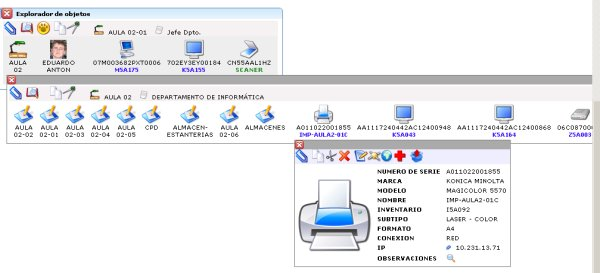Vista en árbol del Explorador de objetos
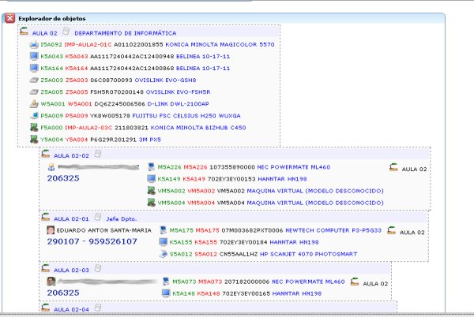Ubicación física de equipos
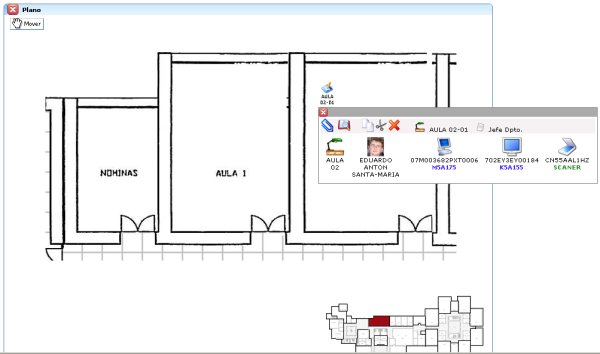Gestión de Direcciones IP

Histórico de equipo
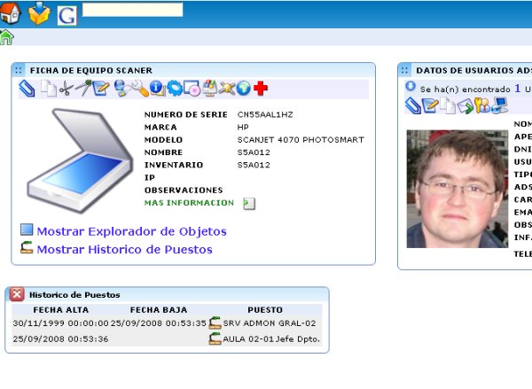Gestión de usuarios
La gestión de usuarios está integrada con el módulo anterior de gestión de inventario. La característica más notable de TAU es que está orientado al usuario, es decir, el usuario forma parte como un item de la base de datos de inventario. Gracias a este enfoque, podemos saber que equipos tiene asociada una persona, sino también que aplicaciones tiene autorizadas (y por tanto deberán estar instaladas en el ordenador asignado), su ubicación física, teléfonos de contacto, etc.Ficha de Usuario y equipos que lo rodean

Explorador de objetos

Aplicaciones y perfiles asociados al usuario

Gestión de aplicaciones
Junto a la información de equipos, usuarios, y ubicaciones, la base de datos de inventario se enriquece con el inventario de aplicaciones (ya sean productos software tal cual, o bien "aplicaciones corporativas" entendiendo estas últimas como el acceso a un sistema de información (sin tener en cuenta el software base que se precise para su acceso), o incluso carpetas de red (recursos compartidos). También se controla los perfiles disponibles para la aplicación, los usuarios que tienen asignado dichos perfiles, quien autoriza el acceso, y la posibilidad de generar "hojas de autorización de acceso a la aplicación para un determinado usuario". Así mismo se registran que IPs están reservadas para dicha aplicación, así como enlaces a Manual de usuario, Manual de Instalación, y Ficha Técnica (cuyo contenido se puede mantener en un gestor documental o en una WIKI).Ficha Aplicación con Perfiles y Usuarios
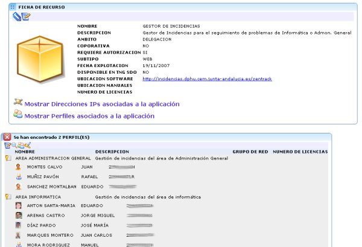Direcciones IPs asociadas a la aplicacion
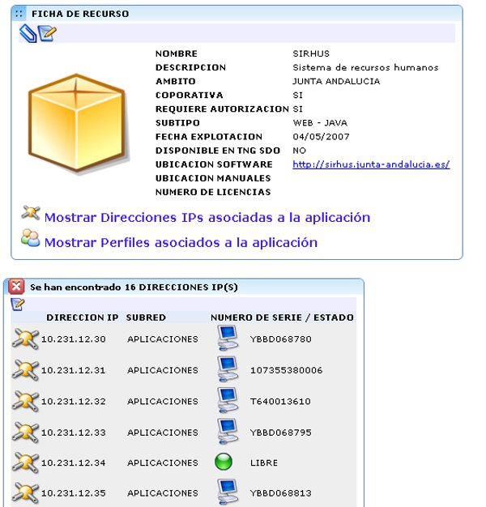Grupos de autorización de acceso

Generación de hoja de autorización

Gestión de extensiones y rosetas telefónicas
Añadido al inventario están las extensiones telefónicas (números de teléfono), categorias de salida, tecnología, grupos de captura, usuarios que tienen asociada dicha extensión, roseta de pared a la que están conectada, etc. En definitiva, poder registrar la información de parcheo de los armarios telefónicos y de red.Ficha extensión telefónica
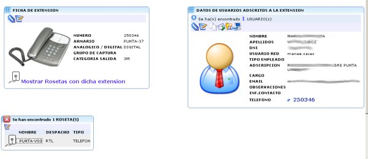Generación de Listín Telefónico

Gestión de averías
Una vez que se tienen inventariados los equipos, en dicho proceso se registra su fecha de compra, de fin de garantía, empresa suministradora, y empresa CRIJA de mantenimiento tras la garantía. Con esta información podemos saber si el equipo está en garantía y a quien dar el parte de incidencia a raíz de una avería. Por cada avería, permite registrar el diagnóstico, la resolución, el ticket de averia suministrado por el reparador, y el coste. De esta manera se registran todas las averías de equipos, y se permite visualizar el histórico de averias para un equipo, y averias pendientes.Alta de avería

Averias pendientes de cierre
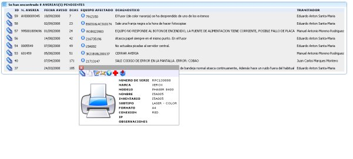Informe de parte de avería
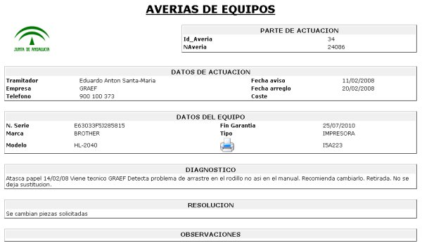Gestión de contactos
Los Departamentos de Informática precisan contactar con entes internos / externos (bien via telefónica, email, fax) para el desarrollo de su actividad (proveedores, CAUs, partners, etc.). Mediante este módulo se permite tener una agenda de contactos compartida para todo el Departamento.Búsqueda de un contacto

Biblioteca de CDs y DVD
Normalmente, con la adquisición del nuevo equipamiento, los equipos vienen con CD/DVD de instalación de drivers, manuales, utilidades, que es preciso conservar para su referencia futura. Este módulo permite inventariar cada CD por categoría, o por área o descripción, lo que facilita enormemente la búsqueda.Búsqueda de CD de drivers por árbol
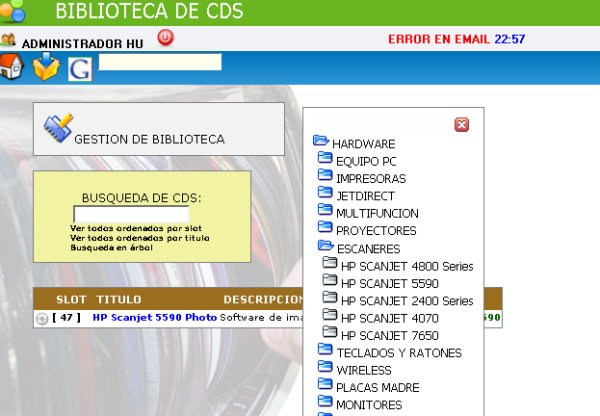Servicio de Mensajería
Comunmente en un Dpto. de Informática trabajan un grupo de personas. Normalmente, debido a la naturaleza de nuestro trabajo, muchas de las veces no estamos en nuestro "puesto", ya que estamos haciendo un "trabajo de campo". Ocurre normalmente que el resto de nuestros compañeros atienden llamadas de teléfono, o visitas "nuestras", y simplemente nos dejan un post-it en el puesto para recordarnos quien nos ha llamado o visitado. Pues bien, este módulo pretende sustituir los post-it por un servicio electrónico de mensajería.Redacción de una llamada perdida

Gestión de almacén y control de fungibles
Una de las tareas más engorrosas de un Dpto. de Informática es la gestión de almacén y consumibles. Este módulo nos va a permitir saber cuantas existencias tenemos de cada fungible, registrar sus movimientos (y por lo tanto elaborar estadísticas de gasto y optimización de espacio en almacén). Realizar pedidos y controlar su recepción en base al estado del almacén. Además, a la hora de descontar un consumible, el sistema automáticamente nos dará un listado de los consumibles que utiliza un determinado equipo.Descuento de un toner por sustitución
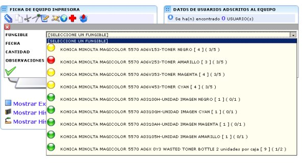Estado de un pedido

Ficha de fungible

Estado del almacén
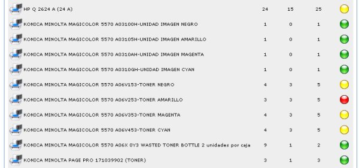Integración con Directorio Activo
El entorno más habitual en un Dpto. de Informática es disponer de un Dominio Windows para la gestión de autenticación y acceso a carpetas o recursos de red. Mediante éste módulo se puede administrar las tareas más habituales del Directorio Activo via web (crear, editar, borrar usuarios, grupos, unidades organizativas, cambiar contraseñas, desbloquear usuarios, mover objetos, asignar usuarios a grupos, etc.). Además, el módulo permite otras funcionalidades añadidas como es la integración con el la ficha usuario de inventario (navegación TAU <-&bt; Directorio Activo), ver en qué equipo ha inciado sesión un usuario, creación automática de usuarios en el Directorio Activo a partir de la información de inventario de TAU, etc.>Ficha Usuario directorio activo

Plantilla de creación automática
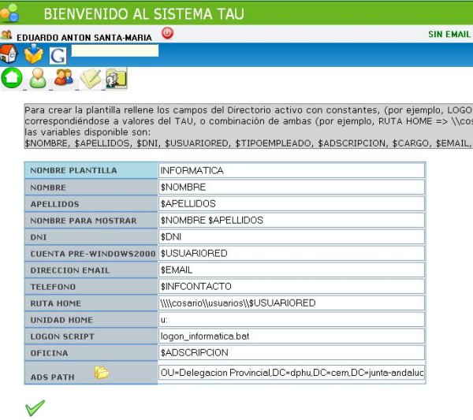Localización del usuario
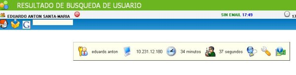Control Remoto
Para la asistencia a los usuarios (y sobre todo en los centros remotos), la utilización de una herramienta de control remoto permite resolver la mayor parte de las incidencias. Este módulo de TAU utiliza el software GPL UltraVNC (que entre otras cosa, permite autenticación Windows, transferencia de ficheros, drivers de aceleración). Desde TAU se puede instalar, y acceder por control remoto, a los equipos que pertenezcan a nuestro dominioAcceso por control remoto a equipo

Gestor de incidencias
Para la gestión adecuada de las incidencias de usuario es preciso de la obtención de una herramienta de help-desk que permita registrar y hacer un seguimiento de las incidencias. En este caso, se ha creado un módulo para la integración de TAU con el gestor de incidencias GPL Zentrack. La integración consiste en la autenticación SSO con dicho gestor, y el empotrado de la aplicación en la interfaz de TAU (posibilidad de ver nuevas incidencias sin necesidad de entrar en TAUPortal de incidencias para usuarios
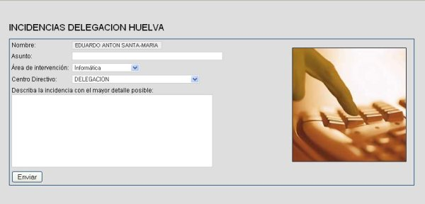Aceso a Zentrack integrado con TAU
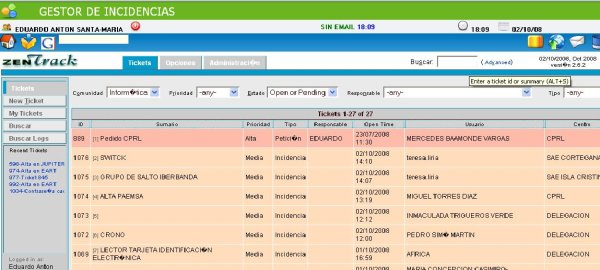Conexión Terminal Server
Independientemente de pode utilizar la herramienta de Control Remoto para administrar nuestros sevidores, nos puede interesar conectarnos mediante un cliente RDP de escritorio remoto (terminal server). Mediante un applet en Java, este módulo permite establecer conexiones RDP sin necesidad de instalar software previoConexión Terminal Server

Obtención de datos en tiempo real
El inventario representa una información estática de los elementos que gestiona el Departamento. A veces es preciso contrastar dicha información estática (normalmente como se dice vulgarmente "metida a mano") con la real. TAU dispone de un módulo que permite "preguntar en remoto" al ordenador los datos que le son propios (tales como memoria, disco, espacio restante, procesos corriendo, software instalado, tarjetas de red, MAC, etc...). Esta información se obtiene a través de la interfaz WMI de Windows, y permite obtener "en tiempo real" el estado del equipo.Datos en tiempo real de un equipo

Procesos corriendo en el equipo
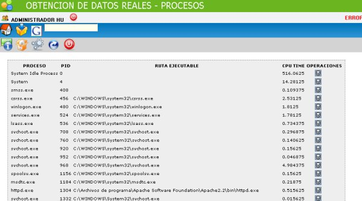Notificaciones
Una de las tareas más habituales de un Dpto. de Informática es "comunicar" a sus usuarios algún evento, actualizacíón, etc. para su conocimiento. Los medios para ello pueden ser tan diversos como mandar un "net send", escribir a una "lista de correo", o la ejecución de un script en el inicio de sesión. Gracias a que en el "inventario" tenemos la base de datos de usuario, las aplicaciones que utiliza, este módulo se aprovecha de dichos datos para la creación de "listas dinámicas", es decir, posibilidad de enviar un mensaje sólo a los usuarios de una o más aplicaciones, etc. Las posibilidades que contempla son las de "net send", envio de correo electrónico, o mostar una página HTML a pantalla completa con el mensaje, en el inicio de sesión. Esta última posibilidad permite programar las fechas en que dicho mensaje será visible, así como cúantas veces el usuario debe poder ver el mensaje (para evitar machacar al usuario con el mismo mensaje). Para la edición del mensaje HTML, el módulo dispone de un editor HTML empotrado (al estilo WIKI) con lo que no se precisan conocimientos de HTML para la redación de la página. Algunas capturas para hacerse la ideaCreación de mensaje
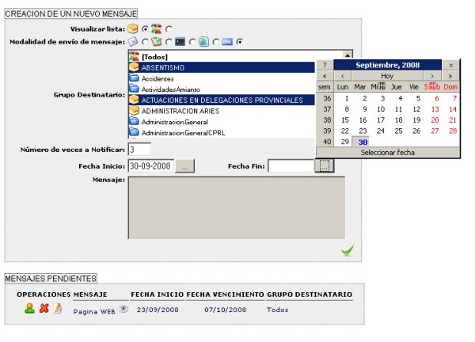Edición de mensaje HTML a partir de plantilla
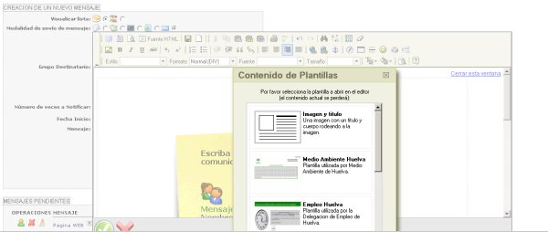Estado de mensajes pendientes de visualizar
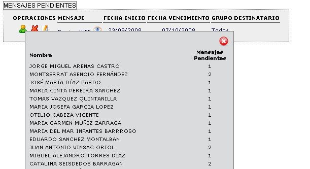Notas, Calendario, Utilidades, Alertas, Correo electrónico
Además de los módulos principales descritos en los puntos anteriores, TAU dispone de pequeñas utilidades tales como Notas que permite la creación de pequeños TODOs o notas post-it personalizadas por usuario. Calendario que permite ver el calendario actual y realizar anotaciones para recordatorio u ocupación del tiempo. Utilidades, para cosas tan simples como calcular la letra del DNI. Alertas que permite que "otros entes externos" manden alertas a TAU (como si fuese un syslog) para verlas dentro de la interfaz de TAU. Correo electrónico posibilidad de conexión a buzón entrante POP3 para avisarnos de mensajes nuevos, y ver los asuntos de los 3 últimos mensajes.Uso de los módulos a la vez
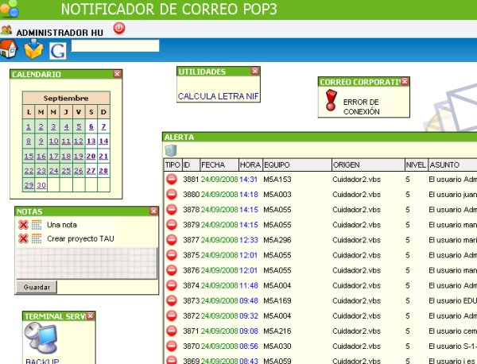Estadísticas de sincronización remota RSYNC
Dentro de las tareas de Copia de Seguridad, utilizamos la herramienta RSYNC de sincronización remota. Dicha herramienta permite realizar copias de seguridad eficientes de servidores en ubicaciones remotas y con enlaces de comunicaciones lentos. Este módulo permite monitorizar la sincronizaciones realizadas y generar estadísticas para ver el crecimiento y evolución de la sincronización.Estadísticas recolectadas

Vistas en paneles
Ya comentamos que TAU es un framework básico al cual se conectan una serie de módulos que son los que realmente ofrecen funcionalidad. Normalmente sólo se puede utilizar un módulo al mismo tiempo, sin embargo TAU dispone de una interfaz de paneles, que permite echar una "vista abreviada" de un módulo mientras se trabaja con otro (ver si hay correos nuevos, crear una nueva nota, buscar un contacto, etc...) todo ello sin abandonar la pantalla del módulo con el que hasta ese momento estábamos trabajando. Es como una vista rápida a los otros módulos. Se pueden crear tantos paneles como se deseen.Vista en paneles

Administración de paneles

Distintos módulos de autenticación
Para el control de acceso, TAU permite varias opciones, entre autenticación contra un LDAP, y contra un Dominio de Windows. En ambos casos el usuario se crea en TAU y la contraseña se contrasta contra el LDAP o el dominio Windows. Una vez autenticado el usuario, se crea un cookie de sesión que permite validar al usuario con mayor agilidad.Existe la posibilidade de hacer un SSO con el Dominio de Windows, de forma que el usuario al acceder a la página web, automáticamente sea reconocido ya que previamente el usuario ha iniciado sesión en un dominio.
Diferentes métodos de autenticación

Activación selectiva de módulos
Puesto que TAU se compone de módulos, el administrador puede elegir cuales de ellos "activar" y cuales no. Es decir, cuales podrán utilizar los usuarios de TAU y cuales no. Toda la configuración de un módulo se realiza a través de la página de administración de módulosAdministración de módulos

TAUPhone
TAU dispone de una herramienta auxiliar que permite interactuar con la línea telefónica a través de un modem. De esta manera, cuando el operador recibe una llamada se le abrirá la página de TAU con el usuario que está llamando disponiendo de toda la información de soporte "antes de coger el teléfono". Por otra parte, mediante dicha herramienta, al pulsar sobre un número de teléfono dentro de TAU, automáticamente realizará la llamada a dicho númeroAplicación TAUPhone